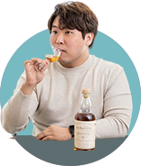
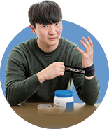

새울본부의 덕후들이 한 자리에 모였다. 각자 다른 분야의 덕후지만 덕후 특유의 공통점으로 쉽게 공감대가 형성되었다. 본인은 평범한 덕질을 하고 있다 말하지만 선수는 선수를 알아보았다. 덕후라 부르지만 저 깊은 곳에는 ‘광기’를 품고 있음을.
글. 손은경 사진. 안지섭
최재한 주임
(새울본부 경영지원실 총무부)
라멘을 위해서라면
이사쯤이야!

심인섭 주임
(새울본부 1발계측제어부)
위스키 사러
제주도 당일치기 GO!
백대근 청경
(새울본부 경영지원실 정보보안부)
새벽 5시에 돼지국밥 먹으러
가보셨나요?

양복열 주임
(새울본부 제2발전소 시운전발전부)
행군 후 20kg 군장 중량턱걸이.
내 인생 행복의 순간!
백대근 청경
부산 남자 음식 TOP 3가 돼지국밥, 돈가스, 제육볶음이에요. 그중 제 원탑은 돼지국밥인데요. 어릴 때부터 아버지 따라다니면서 먹다 보니 어느 순간 돼지국밥 절대미각을 갖게 되었어요. 돼지국밥 좀 한다는 집도 찾아다니고, 생각날 때마다 식당을 찾아가다 보니 일주일에 두세 번은 꼭 먹는 돼지국밥덕후입니다.
양복열 주임
원래 살이 안 찌는 체질이라 굉장히 말랐었는데요. 군입대 후 훈련소 때부터 꾸준히 운동하고, 정시, 정량 식사를 하다 보니 몸이 달라지는 게 보이더라고요. 노력한 만큼 성과가 나타나는 운동의 매력에 빠지게 된 것 같아요.
최재한 주임
좋아하는 라멘집에 가까이 살기 위해 이사까지 할 정도로 라멘을 너무 좋아해요. 어떤 특별한 계기로 꽂혔다기보다는 어느 날 라멘을 먹었는데 ‘이게 바로 힐링이구나!’ 싶었어요. 그 행복감을 잊을 수가 없어서 꾸준히 라멘을 먹고 있습니다!
심인섭 주임
위스키를 좋아하는 친구 따라 위스키 전문 바에 갔어요. 위스키를 한잔 탁 입에 털어 넣었는데 너무 독했어요. 바 사장님이 여러 번 나눠 마시는 방법을 알려주시고 따라 해보니까 입안에 도는 여운이 다른 거예요. 고소한맛, 과일향 등등. 그때부터 위스키 덕후의 길을 가게 된 것 같아요.
백대근 청경
전문성이 있어도 덕후지만, 제가 생각하는 덕후는 자기가 정말 좋아하는 것을 남들보다 훨씬 많이 접하는 사람이라 생각해요. 머릿속에 제일 먼저 떠오르고, 아무리 많이 접해도 질리지 않고 늘 반갑게 즐길 수 있는 사람이 덕후인 것 같아요. 저도 메뉴 선정할 때 제일 먼저 떠오르는 게 돼지국밥이고, 먹어도 먹어도 질리지 않더라고요.
양복열 주임
‘제2의 직장’이랄까요? 직장에 마음대로 결근해서는 안 되잖아요. 그리고 생활을 위해서 직장에 나가 돈을 벌어야 하고. 저에게 운동도 그래요. 제 일상에 활력을 위해 없어서는 안 돼요. 운동 후의 개운함을 좋아하고, 관리 차원에서도 하는 거라 회식이 있으면 반반차라도 내서 운동하고 옵니다.
최재한 주임
혼자서도 제대로 즐길 줄 아는 사람이요. 어떤 것에 덕질을 하느냐에 따라서 색안경을 끼고 보는 사람도 있지만 이런 것에 개의치 않고 하고 싶은 것 마음껏 즐기는 사람이 덕후라 봐요.
심인섭 주임
한마디로 ‘아마추어 전문가’라고 정의할 수 있을 것 같아요. 프로 전문가는 자신의 전문 분야에서 돈을 받잖아요. 반대로 덕후들은 돈을 내면서 하거든요. 저도 위스키에 돈과 시간을 투자해서 즐기는 것 같아요. 지금까지 쓴 돈이요? 그건 비밀입니다! 상상 그 이상일 걸요?
백대근 청경
나름의 비유를 들어 설명하자면 그냥 좋아하는 건 ‘썸’과 같은 느낌이고, 덕후는 ‘여자친구’인 것 같아요. 제게 있어 너무나 소중하고 안 보면 안 되는 존재잖아요. 시간이 빌 때 만나는 게 아니라 시간을 내서 만나러 가고. 썸에서 끝나느냐, 여자친구가 되어 소중한 존재가 되느냐. 거기서 마음가짐이 달라지는 것 아닐까 싶어요.
양복열 주임
지갑을 얼마만큼 열 수 있느냐에서 둘이 갈린다고 봐요. 보통 덕후를 보면서 ‘그 돈이면 뭘 더 할 수 있다’ 이런 반응을 보이잖아요. 덕후들이 거기서 얻는 기쁨은 그 이상이예요. 저도 헬스 대회 출전을 앞두고 있을 땐 닭가슴살, 보충제, 영양제, 헬스장 등록비 등 적잖은 비용을 투자해요. 목표가 있고, 거기에서 얻는 즐거움이 있다 보니 기꺼이 지갑을 열더라고요.
최재한 주임
경험을 어떻게 남겨두느냐에서도 차이가 나는 것 같아요. 저는 라멘을 먹고 난 후 먹으러 가면서 느꼈던 생각, 먹었을 때의 느낌을 정리해서 인스타그램에 남겨요. 그런 기록을 보니 지금까지 라멘집을 103번 갔고, 대략 200그릇의 라멘을 먹었더라고요. 단순히 즐기는 것에서 그치지 않고 기록을 남기는 것도 있다고 봐요.
심인섭 주임
‘얼마나 자주’가 핵심이라 생각해요. 덕후들에게는 관심분야가 언제나 1순위예요. 타지의 국밥, 라멘을 먹으러 가잖아요. 그저 좋아하는 사람들은 ‘겸사겸사’ 가지만, 덕후들은 그것 하나 때문에 먼 길도 즐겁게 가는 사람들이에요.
백대근 청경
요즘에는 싱글들도 많아졌잖아요. 자신의 즐거움, 자신만의 시간 활용에 대한 시선이 과거와는 달라졌고, 지식적인 면에서도 반 전문가라 긍정적인 이미지로 변화한 것 같아요.
최재한 주임
저도 비슷한 생각인데요. 제 주변을 보면 덕질이라는 것도 가정이 생기고 챙겨야 할 게 많아지면 쉽지 않더라고요. 물론 어떤 덕후냐에 따라 달라지겠지만요. 그래도 긍정적으로 자신에게 투자하는 모습이 이제는 건강함으로 비치기 때문이라 봐요.
양복열 주임
정보 공유에 폐쇄적인 사회가 아니다 보니까 그것을 좋아하는 사람들이 많아지면서 멋있는 덕후들을 쉽게 접하게 되는 것 같아요. 직업이 아니더라도 좋아하는 것에 열정으로 임하는 모습에서 요즘 사람들이 삶을 대하는 방식과 잘 맞아떨어졌기 때문도 있지 않을까 생각해요.
심인섭 주임
찾아보니까 ‘오타쿠’라는 단어는 서로를 존중하는 의미로 사용되었는데, 일본에서 한 범죄사건 이후로 부정적인 단어로 변질 된 거예요. 취미를 긍정적으로 즐기는 모습과 누군가의 취향을 존중하는 문화가 점점 퍼지면서 단어 뜻이 제자리를 찾은 것 같아요.
백대근 청경
한번은 너무 잠이 안 와서 새벽 5시에 단골 돼지국밥집을 갔어요. 이걸 먹어야 잠을 푹 잘 수 있을 것 같은 거예요. 보통 사람들이라면 이 시간에 먹냐, 참냐를 생각하거나 아니면 집에서 다른 무언가를 먹겠지만 저는 몸을 일으켜 집 밖으로 기어이 나가서 먹고 들어와요. 덕분에 잠 푹 잘 잤죠.
양복열 주임
군대 있을 때 운동을 시작한 거잖아요. 중량턱걸이가 하고 싶은데 할 수 있을 만한 환경이 안 되는 거예요. 그러다 행군하는 날이었는데, 군장이 대략 20kg 정도 돼요. 행군 끝난 후 제 운동 멘토 선임이랑 군장 메고 턱걸이했어요. 주변에서는 제정신이 아니라고 했는데, 저는 그때 너무 즐거워서 웃으면서 했던 기억이 나네요.
최재한 주임
지난 크리스마스 이브 때 아침 7시에 부산역에서 기차 타고 세종시로 가 ‘비스크멘’이라는 라면을 먹고 왔어요. 이게 보통 일본라멘이랑은 달라요. 토마토소스를 활용한 건데, 가게 사장님도 장사 목적보다는 본인이 하고 싶어서 만든 거예요. 한 그릇으론 안 될 것 같아 두 그릇 먹었어요. 딱 라멘만 먹고 집에 오니 오후 3시더라고요. 남들은 크리스마스에 놀고 있을 때 저만의 라멘투어 했습니다.
심인섭 주임
코로나가 절정일 때 국내 저가항공 티켓값이 굉장히 떨어졌었어요. 그래서 제주도 당일치기로 가서 면세점에서 위스키를 사 왔던 경험이 떠올라요. 위스키 면세가와 항공권 가격을 더해도 시중 위스키 가격보다 상당히 저렴했거든요. 이게 바로 덕후들만이 할 수 있는 행동력이죠.